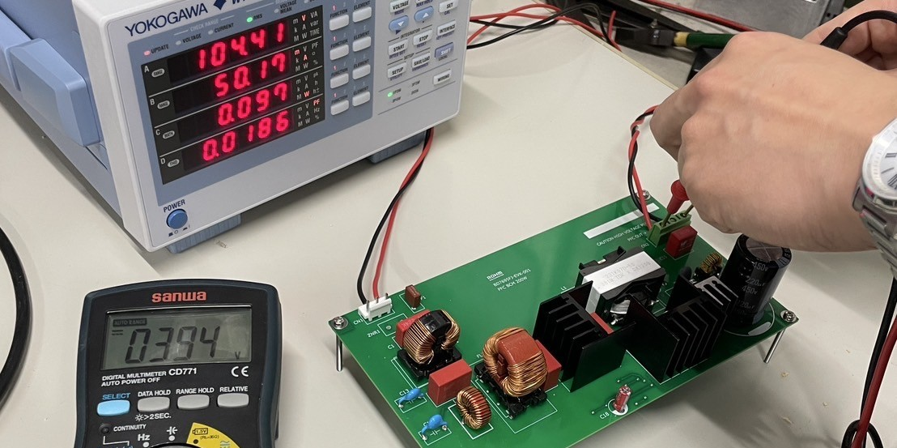

電気機器研究室 近藤健一のページへようこそ
関西大学システム理工学部
電気電子情報工学科
助教 近藤健一
研究紹介

再生可能エネルギー電源の導入拡大に伴い、 電力系統は慣性力の低下や電圧変動といった問題が生じています。 これらの問題をパワーエレクトロニクス回路、 特に、既存の家電製品に内蔵された回路を用いて、 追加機器なしに対策できないか検討しています。
研究室
研究室の所在地などは電気機器研究室のページをご覧ください。
関西大学システム理工学部
電気電子情報工学科
助教 近藤健一

再生可能エネルギー電源の導入拡大に伴い、 電力系統は慣性力の低下や電圧変動といった問題が生じています。 これらの問題をパワーエレクトロニクス回路、 特に、既存の家電製品に内蔵された回路を用いて、 追加機器なしに対策できないか検討しています。
研究室の所在地などは電気機器研究室のページをご覧ください。